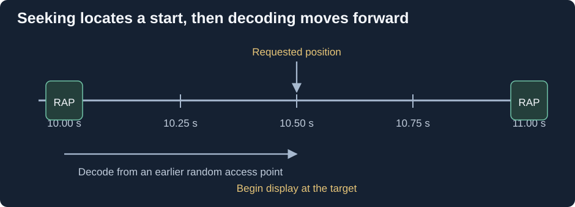

Container Indexes and Seeking
A container index connects points on the media timeline to file locations so a player can seek efficiently.
Move the playback slider to a scene and the player receives a time, not a file address. Seeking must turn that time into readable bytes and then rebuild enough decoding state to produce the requested picture.

Conceptual seek. Random-access positions and index detail depend on the actual codec and container.
A target at 10 minutes and 3 seconds
Suppose a simplified index records usable video restart positions at 600 and 605 seconds. The viewer requests 603 seconds. The reader chooses the earlier suitable position, 600 seconds, and obtains its location in the file.
In Matroska, a Cue can identify a timestamp, track, and location within the segment, typically referring to a cluster holding a video random-access point. The reader follows that reference, parses the cluster's blocks, and supplies the relevant encoded data to the decoder.
It then decodes forward. Pictures before the requested moment can be reconstructed without being shown; they establish the reference state required by later pictures. Once the requested time is reached, normal presentation resumes.
| Part of the seek | Question answered |
|---|---|
| Timeline lookup | Which earlier usable entry covers 603 s? |
| Container lookup | Where are its bytes and selected tracks? |
| Input read | Can the storage or server deliver those bytes promptly? |
| Decoder restart | What references or preroll must be reconstructed? |
| Output scheduling | Which decoded picture and audio samples should first be presented? |
At an illustrative 25 fps, three seconds contain 75 picture intervals. This gives a sense of the forward-decoding work in the example; a real restart depends on dependencies and preroll, not just multiplying the requested gap by frame rate.
What an index changes
Without suitable entries, a reader may scan media to discover timestamps and restart positions. An index avoids much of that search. It is navigation information about the media, so adding it can improve a slow seek without recompressing the pictures.
Chapters answer a different question: they give names to times. “Scene 4 starts at 603 seconds” still needs this byte lookup and decoding process.
An HTTP reader can request a byte range corresponding to the seek rather than fetch the whole prefix. A server transcoding for an Emby app may instead restart source reading and conversion, then generate new output around the desired time. These paths put the same time request through different combinations of storage, network, and processing.
Compare where the delay occurs. A reader spending time scanning a source has a different problem from one that locates the bytes quickly but cannot fetch or decode them fast enough. A readable file with missing navigation can often be remuxed to create new indexes. An unreadable or damaged payload needs a response directed at the media itself.